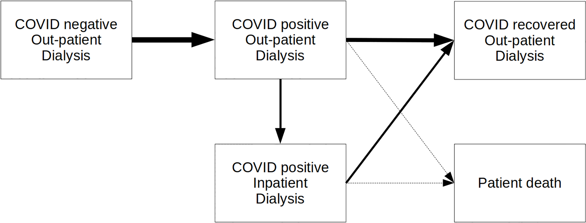
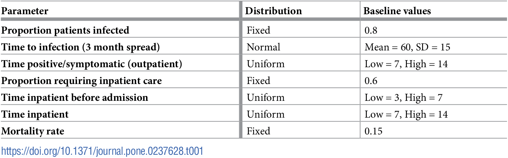

No need to change from MIT, as that was used by Allen et al. 2020.
Untimed: Display article on website
Set up article and supplementary to display on website in study_publication.qmd.
13.20-13.56: Reading article
Read article, making notes in study_summary.qmd (initially rough notes, then tidied slightly).
Notes from read through of paper
Type of model: Discrete event simulation (excluding sections of the paper relevant to another model - a Monte-Carlo vehicle routing model of patient transport)
Purpose of model: Model service delivery in dialysis network during change in COVID-19 cases.
How model was created:
Python 3.8
SimPy 3
MatPlotLib
STRESS reporting guidelines
DES on Intel i9-7980XE CPU with 64GB RAM running Ubuntu 19.10 Linux
Context:
Wessex - mixed urban/rural setting, renal dialysis services cares for 644 patients, nine centres. 75% of patients use patient transport services.
COVID-positive patients treated seperately to COVID-negative.
Model design:
Model change in inpatient and outpatient workload during pandemic at each dialysis unit in network. Estimate over three to six months. Estimate number of patients required to travel to different unit and change in travel time.
Inputs: Patient location postcode. Travel time routine. Worst case time spread COVID Fergeson. Mortality rate, time patient COVID-positive before admission, and inpatient rate of stay were local parameters.
Defined period (e.g. one year). Patients progress through phases of COVID (negative, positive, some with inpatient care, recovred, died). In each COVID state, model seeks to put them in appropriate unit and session, opening COVID-positive sessions in units that allow it. COVID-positive don’t mis with others.
Run 30 times, show median and extremes.

Patient pathway figure from Allen et al. 2020
All patients receive dialysis 3 times a week. Each patient starts on either Monday or Tuesday.
Have proportion of patients either fixed or sampled from stochastic distribution for phases of COVID state and care.
COVID seperate from uninfected and recovered.

Baseline model parameters from Allen et al. 2020
For allocation to units, use search strategy:
COVID negative or recovered - look for place in current unit, if no space, find closest unit (by travel time) with available space
COVID positive - put in Queen Alexandara, and if full, make capacity in Basingstoke. If new COVID session required, more all COVID negative patients in that session as per neg rules.
COVID positive inpatient - all in Queen Alexandra (but allows search for unit with inpatients)
Unallocated - if can’t allocate to any units, attempt again next day
Once every week, attempts to reallocate patients back to starting unit or closest available. This is so cared more nearby and to compress COVID positive patients into few units and sessions.
COVID positive converted back to COVID negative when no longer needed.
Results:
States current median travel time from home to dialysis unit, and current capacity.
Figures 2, 3, 4 show impact of COVID infecting 80% patients in next three months.
Figure 2 - number of patients in each COVID state over 150 days
Figure 3 - as figure 2, but divided by unit? and with diffferent categories shown.
Figure 4 - patients displced from current unit, and travel time added
Using half of Queen Alexandra and then Basingstoke for excess for COVID positive copes without any patients being unallocated to session and no need to reduce dialysis frequency.
Reduces workflow in units not taking COVID positive patients.
Displaced patients typically need 20 extra minutes to get to temporary care place (sometimes 50 minutes)
Figure 2
Figure 3
Figure 4
Discusion:
Dialysis unit can cope with worst case spread. Requires reallocation of patients, will impact on ambulance and efficiency.
Likely significant patient partessures, current capacity breached, consider moving dislaysi requipment during peak COVID positive.
Transporting individually unsustainable.(Markov?)
Model limitations - assumes can reallocate immediatley, assumes current capacity maintained (i.e. no staff shortage), not modelled timing, not included home dialysis.
13.56-14.27: Identifying scope
Made page for scope under evaluation - scope.qmd. Then went through process of:
Uploading tables and figures
Added each table and figure, and marking as being within scope or not
Looking through paper for key results, focussing on abstract and results section.
Compared those against the tables and figures to check if they are captured or not.
Notes from identification of key results and comparison with figures
Abstract:
Need secondary site, reduces workload in other sites, increases in primary site: “Outpatient COVID-19 cases will spillover to a secondary site while other sites will experience a reduction in workload. The primary site chosen to manage infected patients will experience a significant increase in outpatients and inpatients.”
Captured in Figure 3
Up to 140 COVID positive with 40-90 inpatients, breaching capacity: “At the peak of infection, it is predicted there will be up to 140 COVID-19 positive patients with 40 to 90 of these as inpatients, likely breaching current inpatient capacity.”
Captured in Figure 2 (combine yellow and red lines) and Figure 3 (having inpatients across two sites and not just one)
Results:
No patients unallocated: “In the planned strategy of using half of one of the largest units (Queen Alexandra) for COVID-positive dialysis outpatients, and then using a second unit (Basingstoke, also provid- ing up to half of its capacity for COVID-positive dialysis outpatient patients) for any excess, the dialysis system copes without any patients being unable to be allocated to a session (or without any need in dropping dialysis frequency). Workload in units that do not take COVID- positive outpatients will fall during the outbreak (though some work will flow back to them if they need to care for COVID-negative patients displaced from the units caring for COVID- positive patients).”
Initially thought this was out of scope, but following chat with Tom, noticed that Figure 2 shows no unallocated (purple line)
Displaced patients have 20 minutes (sometimes up to 50) extra travel time “Outpatients may be displaced from their usual unit of care either because they need to travel to a COVID-positive session in another hospital, or because their unit has had to free up sessions for COVID-positive sessions. These patients typically require 20 minutes extra travel time to get to their temporary place of care (assuming they are travelling alone), with some requiring 50 minutes extra travel in each direction to/from dialysis.”
Visible in Figure 4
Untimed: Reorganising scope page
Reorganised into collapsible boxes for clearer layout.
Untimed: Consensus decision on scope
Discussed scope with Tom Monks.
Corrected “Markov” is “Monte Carlo”.
Whilst discussing, noticed that the number of unallocated patients is in Figure 2, so removed from scope.
Otherwise agreed with scope.
Untimed: Uploading to Zenodo
Not doing for this one as it is a test-run.
Timings
import syssys.path.append('../')from timings import calculate_times# Minutes used prior to todayused_to_date =0# Times from todaytimes = [ ('12.11', '12.16'), ('12.18', '12.19'), ('13.20', '13.56'), ('13.56', '14.27')]calculate_times(used_to_date, times)
Time spent today: 73m, or 1h 13m
Total used to date: 73m, or 1h 13m
Time remaining: 2327m, or 38h 47m
Used 3.0% of 40 hours max
Suggested changes for protocol/template
✅ = Made the change.
💬 = Noted to discuss with team.
Protocol:
✅ Suggest keeping a record of the links where uploaded materials were sourced from within the logbook (as below)
✅ Template will contain MIT but default, so modify this section to explain that it is about checking whether need to change from MIT.
✅ Suggest that create pages to display the journal article, supplementary and code at a point after having gone through the code familiarisation steps.
✅ Remove suggestion of creating a summary page (as STRESS-DES and ISPOR provide rigorous summaries, and summaries for sake of understanding make more sense to be in logbook)
✅ And therefore, suggest those reporting guidelines bit include copying and pasting information to answer each there, as much as appropriate (rather than just stating a section in the text to refer to)
✅ Make reference to particular pages in template (e.g. when define scope, the file path to the scope template)
✅ For scope, suggest focus is on results of simulation, rather than other results like description of sample
✅ For scope, change from suggesting what to include, to it being a step by step of first look at tables and figures, then look at rest of text for key results, then evaluate whether those key results are covered by the tables and figures.
✅ When upload journal articles, require to also download the images and tables from the article (not supplementary) as individual files and upload them to the repository too.
✅ For scope, simplify protocol to just look for key results in abstract and results sections. Don’t think should really need to look in discussion or conclusion, as those are more interpretation focussed, and should otherwise be highlighted in abstract - but don’t make it prescriptive, just a recommendation, as focus here is just on finding key results, and recommending where they are likely to be in most (but not necessarily all) papers
Template:
💬 In license, have set “Copyright (c) 2024 STARS Project Team” - is this correct? Also, should it mention the original authors or not? Presuming not, as they will already have license file within that folder, and we will add yet another license file to the reproduction folder so it is stand alone.
💬 Should we have MIT license for reproduction/ and then CC-BY license for main repository? In which case, would need to specify in repository that changing license in reproduction/ folder and not main folder. And explain somewhere what the license files apply to.
Other:
💬 We might sometimes only reproduce part of a study - for example, a paper with multiple models and we focus on the discrete-event simulation. Think about the impact this has, and whether we need to note this somewhere? For example, whether the badges would actually be awarded for this work (or whether that matters - or if important bit is about ability to reproduce the simulation)? Depending on planned output for this work (e.g. if did want to explore publishing with Rescience C, what this would mean). Doesn’t change what we do during replication - just perhaps comments around it re: badges, and what we do with it.